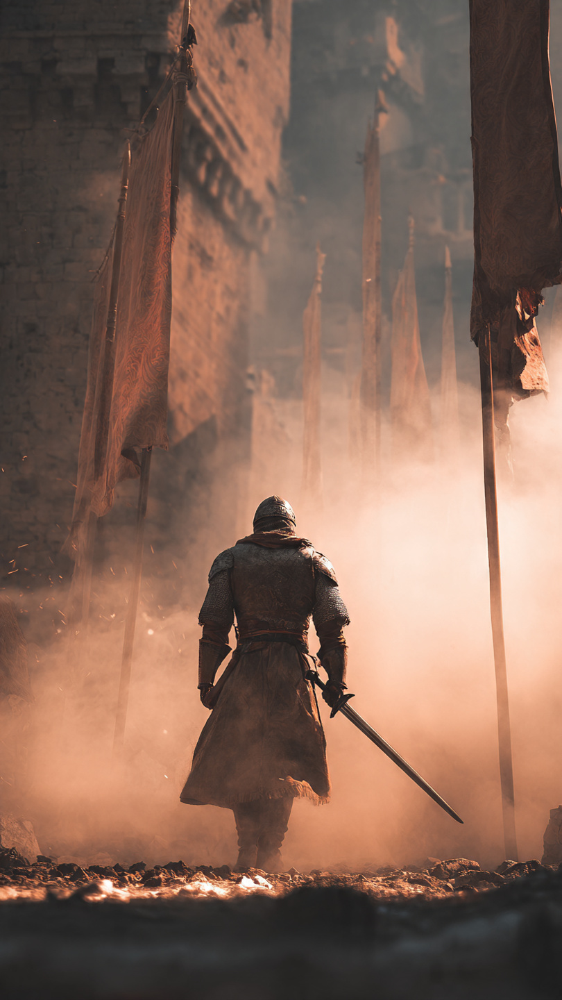
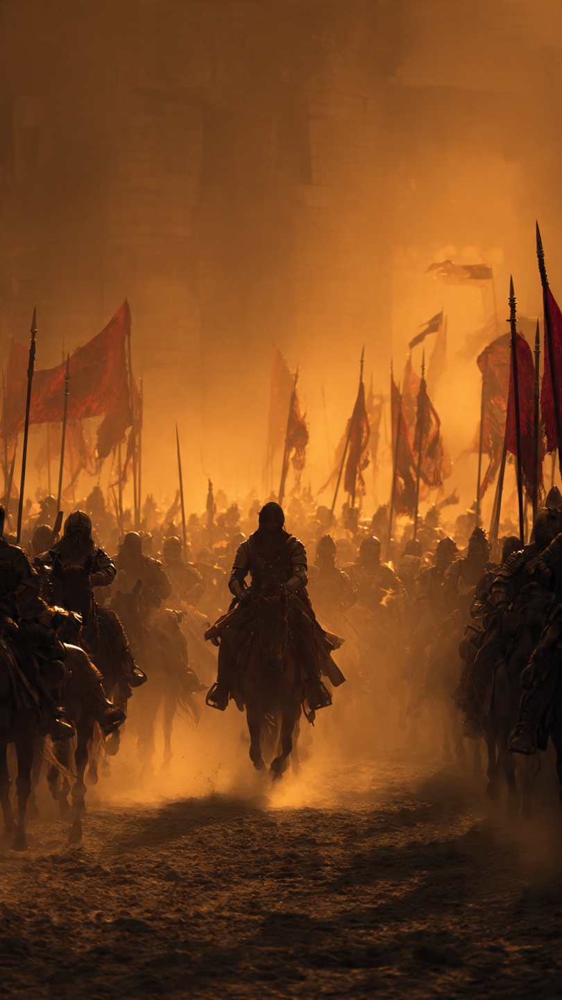

البراء بن مالك.. الصحابي الذي اقتحم الموت عشرات المرات
في زمن الصحابة، ظهر رجال عُرفوا بالشجاعة والثبات في أصعب المواقف.
ومن بين هؤلاء الرجال كان صحابي جليل عُرف بقوة إيمانه وشجاعته الكبيرة...
إنه البراء بن مالك رضي الله عنه.
كان البراء من الأنصار، وكان أخوه أنس بن مالك رضي الله عنه من الصحابة المعروفين.
نشأ البراء في بيت قريب من النبي ﷺ، وتعلم معاني الإيمان والتضحية.
لم يكن البراء يبحث عن الشهرة أو المكانة، بل كان همه أن يكون ممن ينصرون الحق ويثبتون عند الشدائد.
كان يتميز بشجاعة نادرة، وكان يحب مواقف البذل والتضحية.
شارك البراء في عدد من المعارك، وكان دائمًا في الصفوف الأولى.
فقد كان يرى أن خدمة الدين تحتاج إلى رجال لا يخافون الصعوبات.
ومن أشهر مواقفه كانت في حروب الردة بعد وفاة النبي ﷺ.
حيث واجه المسلمون جيش مسيلمة الكذاب في معركة اليمامة، وكانت من أشد المعارك.
كان جيش مسيلمة متحصنًا داخل حديقة قوية، وأصبح الوصول إليهم أمرًا صعبًا.
في ذلك الوقت، احتاج المسلمون إلى رجل شجاع يقوم بمهمة خطيرة.
فنظروا إلى البراء بن مالك، الرجل الذي عُرف بثباته.
لم يتردد البراء، وتقدم ليشجع المسلمين على الاستمرار.
كان يعلم أن الشجاعة ليست في عدم وجود الخطر...
بل في مواجهة الصعوبات من أجل هدف عظيم.
📷 الصورة رقم 1

اشتدت المعركة في اليمامة، وكان المسلمون يواجهون موقفًا صعبًا.
كان جيش مسيلمة متحصنًا داخل الحديقة، ولم يكن الوصول إليهم أمرًا سهلًا.
رأى البراء بن مالك أن المسلمين يحتاجون إلى دفعة قوية من الشجاعة والثبات.
فشجعهم على التقدم، وأظهر لهم أن التراجع ليس حلًا عندما يكون الهدف الدفاع عن الحق.
كان البراء من الرجال الذين يرفعون معنويات من حولهم.
فوجود شخص ثابت في وقت الخوف قد يمنح الآخرين قوة للاستمرار.
تقدم المسلمون، واستطاعوا تجاوز الصعوبات حتى دخلوا الحديقة وانتصروا في المعركة.
لم يكن انتصار المسلمين بسبب شخص واحد فقط، بل بسبب تعاون الجميع وثباتهم، وكان البراء واحدًا من الرجال الذين كان لهم أثر كبير في ذلك الموقف.
اشتهر البراء أيضًا بكثرة دعائه وثقته بالله.
فقد كان يعلم أن الشجاعة الحقيقية لا تنفصل عن التوكل على الله.
وكان الصحابة يعرفون أن البراء رجل لا يطلب الراحة عندما يحتاج الموقف إلى تضحية.
لكن شجاعته لم تكن تهورًا...
بل كانت نابعة من إيمان قوي وإحساس بالمسؤولية.
وهكذا أصبح اسمه مرتبطًا بالثبات والإقدام في أصعب اللحظات.
📷 الصورة رقم 2

بقي اسم البراء بن مالك رضي الله عنه في التاريخ مثالًا للشجاعة والإيمان.
فقد كان من الرجال الذين أثبتوا أن قوة القلب قد تكون أعظم من قوة الجسد.
لم يكن البراء يرى الشجاعة وسيلة للفخر، بل كان يعتبرها مسؤولية يستخدمها في نصرة الخير.
تعلم الناس من سيرته أن الإنسان قد يواجه مواقف صعبة جدًا، لكنه يستطيع تجاوزها عندما يكون لديه يقين وصبر.
كان البراء يجمع بين صفات عظيمة:
الإخلاص...
والشجاعة...
والتواضع...
والثقة بالله.
ورغم شدة المواقف التي شارك فيها، لم يكن يبحث عن المدح أو الشهرة.
بل كان همه أن يؤدي ما عليه.
إن قصته تعلمنا أن الأبطال الحقيقيين ليسوا فقط من يملكون القوة، بل من يستخدمون قوتهم في الطريق الصحيح.
وبقي البراء بن مالك رمزًا في كتب التاريخ لرجل واجه الصعوبات بقلب ثابت، وعاش حياته مدافعًا عن القيم التي آمن بها.
فالشجاعة ليست أن لا يشعر الإنسان بالخوف...
بل أن يعرف ما هو الحق، ثم يثبت عليه.
⚔️📖 انتهت القصة 📖⚔️
العبرة:
القوة الحقيقية تأتي من الإيمان والثبات، ومن استخدام ما وهبك الله في الخير.